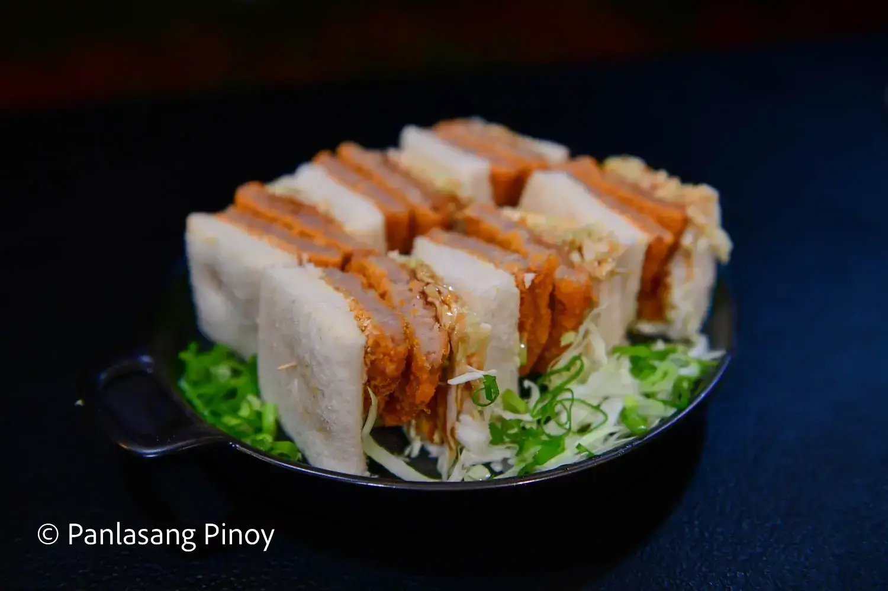

Katsu Sando

Ingredients
- 6 crispy burger patties
- 3 slices tasty bread cut in half
- 1 cup cabbage shredded
- 1/4 cup katsu sauce
- 3 tablespoons butter
- 2 tablespoons cooking oil
- 3 tablespoons mayonnaise
Instructions
- Heat the cooking oil in a pan. Fry both sides of the crispy burger patties using medium heat until crispy. Set aside
- Grab 2 slices of bread. Spread butter on one side of the first slice of bread and mayonnaise on one side of the second bread slice.
- Lay down the bread slice with butter on a flat surface (butter side up). Top with shredded cabbage and tonkatsu sauce.
- Arrange 2 crispy Burgers over it and then top with more shredded cabbage and tonkatsu sauce. Finish by topping with the other bread slice (mayo side facing down).
- Put-in the vinegar and simmer for 12 to 15 minutes
- Add salt to taste
- Arrange Katsu Burger Sando on a serving plate. Serve. Share and enjoy!